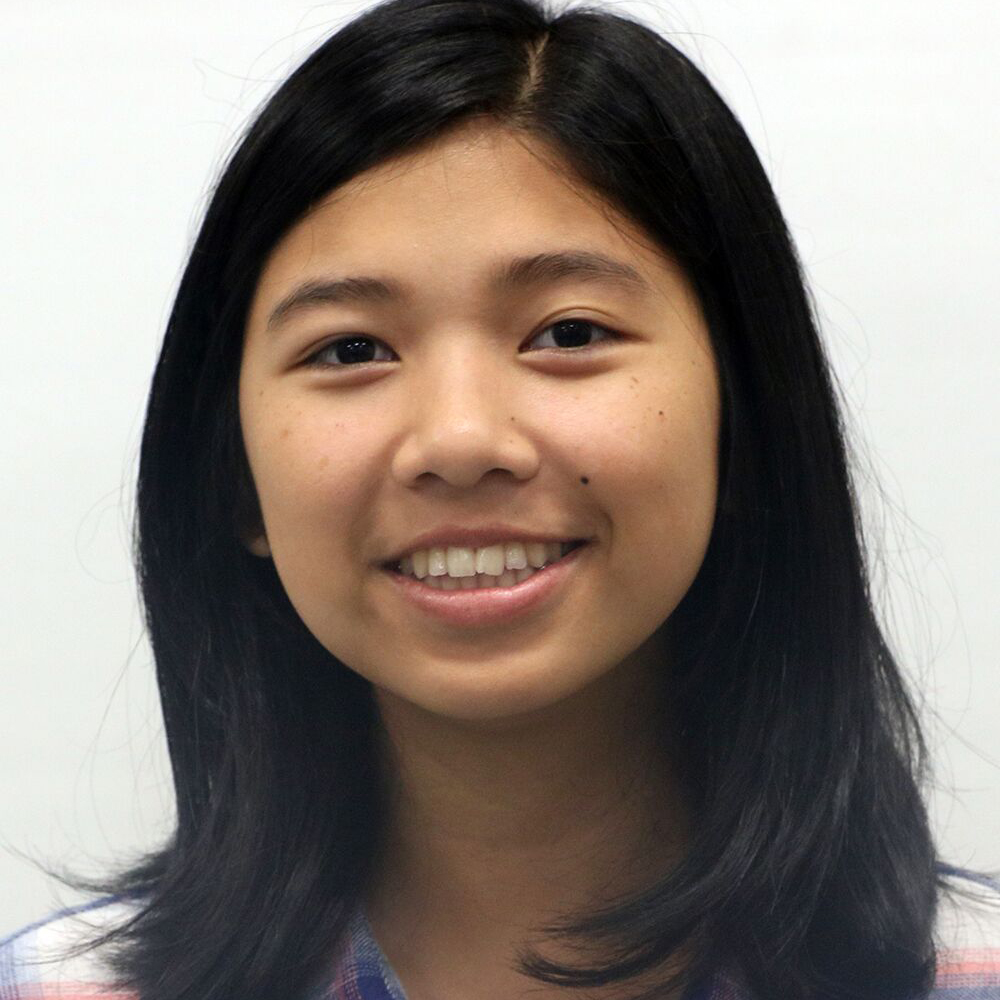
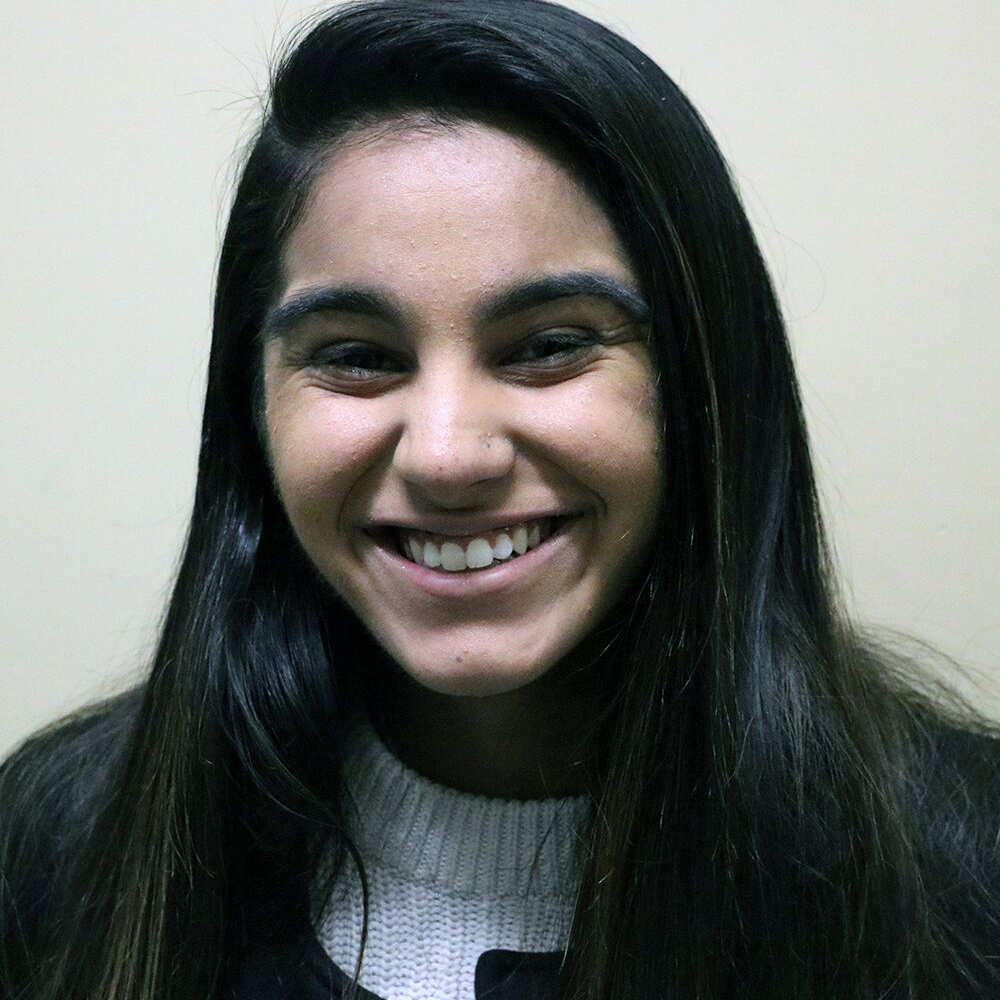
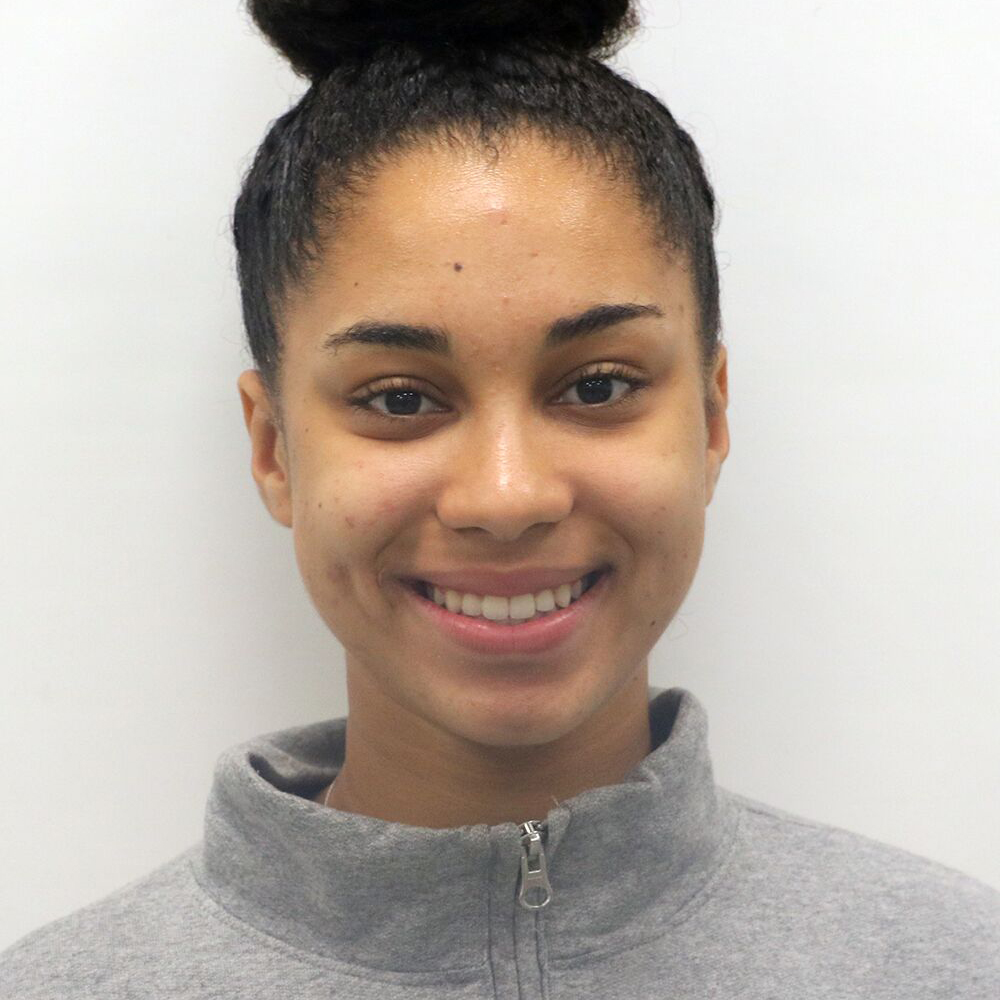
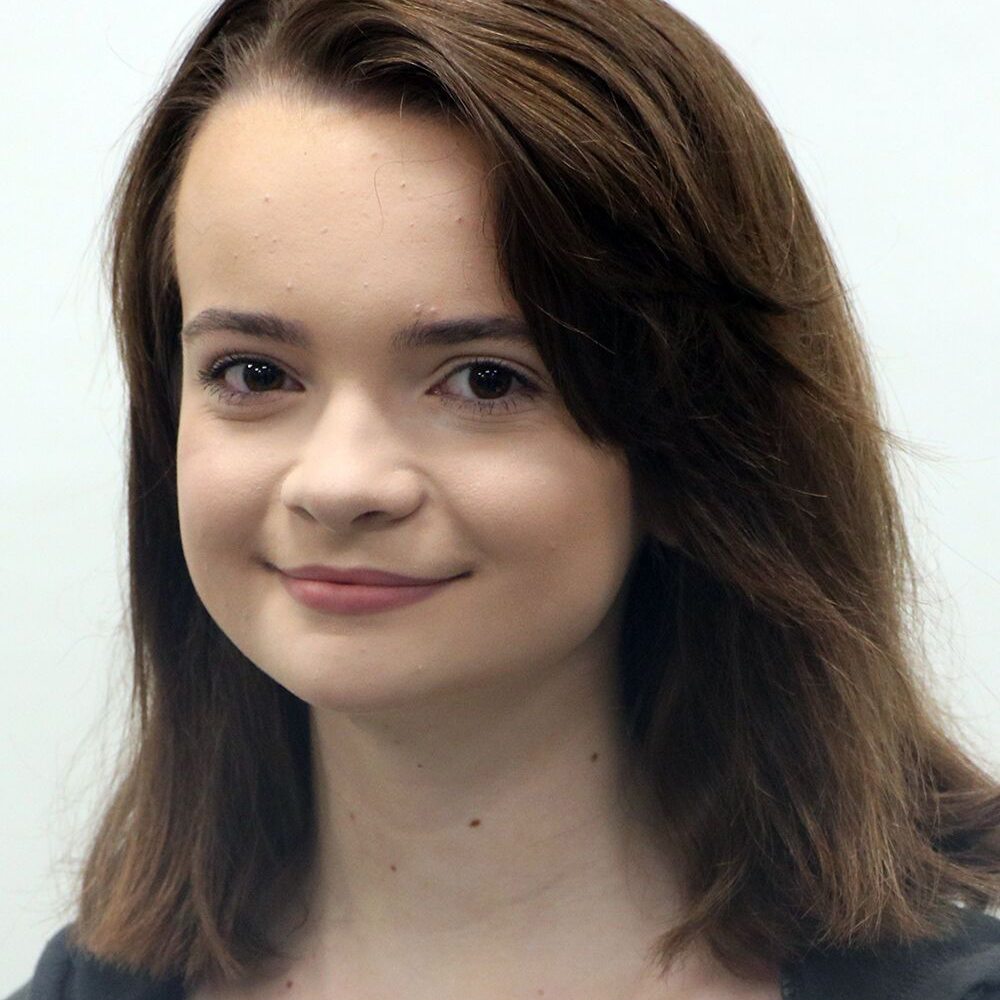

STAFF MEMBERS

CLICK FOR ARTICLES
This is my third year taking Journalism and I am Co- Editor-in Chief of The Olympian. I'm in my senior year and have taken part in many things on campus throughout high school. I am President of Smart Environment Club and have a passion for environmental issues. I enjoy running, hiking, and spending time with my friends. I hope you all enjoy our award winning school newspaper!

CLICK FOR ARTICLESI’m a senior, and I love to write about everything. I am especailly am interested in environmental and human rights issues. Here on campus I am a co-president of Girls Learn International (GLI), and outside of school I am an officer for my 4-H club. In my free time I like to read, draw, watch travel vlogs, and listen to NPR. I also love plants!

CLICK FOR ARTICLESHi! My name is Stella and I’m a senior. This is my third year in Journalism and I’m looking forward to continue writing about a variety of topics for The Olympian. This year, I’ll be the News Editor. In my free time, I like to read, write, travel, and hang out with my family, friends, and dog. I also love to learn new things, including foreign languages and history.
| ||||||||||||||||||||

CLICK FOR ARTICLESActually literally asymmetrical occupy. Flexitarian pour-over schlitz, banh mi pitchfork four dollar toast adaptogen sriracha authentic actually chambray flannel tofu chicharrones iPhone. Irony mixtape sartorial chillwave. +1 vexillologist organic pok pok, street art slow-carb keffiyeh scenester humblebrag leggings stumptown activated charcoal coloring book. Food truck polaroid vexillologist fashion axe man braid retro. Meditation YOLO yuccie etsy, pickled taiyaki master cleanse kitsch lo-fi quinoa subway tile. Portland yr hexagon blue bottle scenester echo park. |

CLICK FOR ARTICLESI’m a senior and the feature editor of The Olympian. I like to write about technology and equality, and everything that intersects between the two. My app Upstream: Combat Climate Change is out on the App Store now. It’s a game designed to inspire positive environmental impact. I’m a participant in Girls Who Code, a president of Girls Learn International, and avid programmer and activist. Last year, I designed this staff page--I hope you like it as much as I like my dog! Please enjoy our newspaper and let it provoke interesting thoughts.
CLICK FOR ARTICLESActually literally asymmetrical occupy. Flexitarian pour-over schlitz, banh mi pitchfork four dollar toast adaptogen sriracha authentic actually chambray flannel tofu chicharrones iPhone. Irony mixtape sartorial chillwave. +1 vexillologist organic pok pok, street art slow-carb keffiyeh scenester humblebrag leggings stumptown activated charcoal coloring book. Food truck polaroid vexillologist fashion axe man braid retro. Meditation YOLO yuccie etsy, pickled taiyaki master cleanse kitsch lo-fi quinoa subway tile. Portland yr hexagon blue bottle scenester echo park. | |||||||||||||||||||

CLICK FOR ARTICLESI'm a senior and this year’s sports editor. I like to say that I'm a person who enjoys the best of both worlds: I'm a nerd who loves coming to school but I also love partying and going out with friends. I’m completely in love with life and everything it has to offer, and hopefully I’ll be able to transmit that with you this year through my writing.
|
CLICK FOR ARTICLESHello! My name is Beruk and I’m currently a senior. This is my second year here it so far and I’m the photo editor this year. I love what I do. Outside of Journalism, I’m a Vice President of Social Media for DECA.
|

CLICK FOR ARTICLESHello! My name is Audrey Manzano. In my free time I like to play video games and watch anime. I like writing about the little things in life that don't seem to matter but I think it's the little things that count. The newspaper is a great way to learn more about everything going on around you and it taught me more about situations I didn't even know were happening.
| ||||||||||||||||||

CLICK FOR ARTICLESHi, I’m Mara and I am currently a junior. I am a copy and video editor for the journalism class of 2017-2018. Boba is life. In my free time I watch a lot of YouTube and listen to a lot of kpop. I am into photography, videography, and technology. I like travelling and documenting places I’ve been. Video editing is a way I like to express myself in which others can see my projects as well!
|

CLICK FOR ARTICLESHey y’all! This is my second year in journalism, and I am so excited for this year at the Olympian. This year I will be the online editor, where I will manage all things on the website and on social media. On campus, I am also part of choir, Interact, and soccer. I enjoy playing soccer, drinking boba, and hanging out with friends! |
CLICK FOR ARTICLES I am senior and I dance competitively and participate in the CVHS Varsity Dance Team. I recently was signed to a dance crew in Los Angeles where I will be training for the next 6 months. Aside from dance, during my free time I love to read and find new music. I am also very passionate about social justice and I am running a club with fellow journalism student Gianna. This will be my first year with the Olympian and I look forward to contributing my thoughts to the paper. | ||||||||||||||||||
CLICK FOR ARTICLESActually literally asymmetrical occupy. Flexitarian pour-over schlitz, banh mi pitchfork four dollar toast adaptogen sriracha authentic actually chambray flannel tofu chicharrones iPhone. Irony mixtape sartorial chillwave. +1 vexillologist organic pok pok, street art slow-carb keffiyeh scenester humblebrag leggings stumptown activated charcoal coloring book. Food truck polaroid vexillologist fashion axe man braid retro. Meditation YOLO yuccie etsy, pickled taiyaki master cleanse kitsch lo-fi quinoa subway tile. Portland yr hexagon blue bottle scenester echo park. |
CLICK FOR ARTICLESI am a sophomore and I really like to participate in school. I play tennis at Cal, monday through friday from five to seven. I fluently speak spanish and currently in Spanish for Heritage Speakers three. I’m interested in learning to write better and also read more because i’ve fallen back on how much I used to. I look forward to improving my writing with being part of Olympian and my tennis skills. |
CLICK FOR ARTICLESI’m a sophomore and my main interests are in the arts.I’m an avid drawer and creative writer. I’m rather active, and am on the Cross Country team. I’m originally from Russia, but have been living in California for the past thirteen years. I often play video games like Kirby and Super Smash Bros, and hold a soft spot for animation. I do kung fu outside of school, and I took two online art courses over the summer.
| ||||||||||||||||||
CLICK FOR ARTICLESI am a senior and I enjoy reading and writing leisurely. I am very very passionate about social justice and recently started a social justice club with a fellow journalist student Shaelly Adams. Social justice sparked snd interest in me last year while I took an Afrocentric course.Next year i hope to i am off attending college and beginning my life. I look forward to being on the Olympian team.
|
CLICK FOR ARTICLESHi, I'm a junior and a staff writer for The Olympian. This is my first year at Castro Valley High School. I lived in Missouri before I moved to Castro Valley. I love reading and writing. I'm also very interested in politics. Last year I was in Yearbook class and I loved it. A fun fact is that I was born in Texas. I have four siblings and I am the youngest.
|
CLICK FOR ARTICLESHi! I am currently a junior at Castro Valley this year and I am extremely glad I made the decision to join journalism. I am on the varsity track and field team here at CVHS and also enjoy playing basketball and soccer. I was born in San Francisco but moved to Castro Valley a while back, and live with my 4 other siblings. I am involved in several clubs at school which are all very fun. Catch me writing your articles in the newspaper!
| ||||||||||||||||||
CLICK FOR ARTICLESHi, if you can’t tell I have an extraordinary name that goes well with my personality. Over the past 16 years (currently a junior) I have learned how to play over eight sports, so naturally I enjoy writing about the actions that go with it. Playing multiple sports allowed my body to build up but don’t forget a mouth is a muscle too! Talking to kids became my passion because different kids come to my house four times a week, to learn Japanese from my mother. It is my goal to talk to all the students at CVHS!
|

CLICK FOR ARTICLESHi! Im Amina and currently a Junior. I'm on the Varsity Volleyball team at CVHS and play club volleyball also. I like to write about sports and people's opinions. I like to draw and read on my free time. I am so excited to be joining this class and hope to have fun, make new friends, and improve my writing.
|
CLICK FOR ARTICLESI’m a sophomore at CVHS this year, and I am happy to be adding mys skills to the Olympian. I like writing about anything and everything, from movies to sports to politics. I spend my spare time reading about many subjects in order to further my total knowledge. I enjoy making models of all sorts, and own quite a few. I hope you enjoy the Olympian this year.
| ||||||||||||||||||
CLICK FOR ARTICLESHi, I am Nathanial and I am currently a Junior. I like to sing and it is my second year being in CVHS A Capella choir. I also enjoy serving my community and currently serve as Key Club Secretary. Besides school activities, I also like photography. I am so excited for my first year on The Olympian.
|
CLICK FOR ARTICLESBorn in the beautiful country of Vietnam, I moved to California at the age of two. Since the 8th grade, I have been enrolled in the leadership class at my school. As a leadership student (currently ASB Clubs Commissioner), I love being behind the scenes of the student activities that emphasize our diversity and Trojan pride. As a junior, I am active not only in classrooms, but also within clubs. Join Red Cross and ChemClub!
|
CLICK FOR ARTICLESI am currently a Junior and I enjoy many different leisures of life. I have multiple hobbies, one being archery. I am currently 16 years old and I have a younger brother who isn’t in kindergarten yet. In my free time, I create beats using FL Studio and watch youtube videos.
| ||||||||||||||||||

CLICK FOR ARTICLESI am currently a junior and I like both history and english. I sing in the a capella choir at CHS and enjoy music of all genres. I like to volunteer in my free time; this past summer, I volunteered at Castro Valley Pride and at East Avenue Camps. Additionally, over the summer I travelled to Spain for two weeks with CVHS Spanish classes. In Spain we divided our time between studying Spanish and sightseeing. In this class, I hope to improve my writing skills and contribute interesting content to the Olympian.
|
CLICK FOR ARTICLESBorn to an American mother and an Argentine father in Madrid, Spain, I was raised in and spent the majority of my childhood in Argentina. I enjoy writing about sports and political events. I spend most of my free time playing competitive soccer and I played on the JV school team both freshman and sophomore year. I hope that this year I will learn a lot from the Olympian staff and that we can write constructive and interesting work.
|
CLICK FOR ARTICLESI am a junior and have interests in sports and the outdoors. I like archery and basketball, and I love to go on hikes. I also love animals and am currently working at vet hospital. I occasionally like to draw and do artsy stuff, but that’s kinda rare. School is alright and I guess we will see if I’m a decent writer or not.
| ||||||||||||||||||
CLICK FOR ARTICLESI am a junior and love devoting my time to serving the community. I can understand both Mandarin and Cantonese, but I can’t speak them fluently. I am involved with Interact and Red Cross; both community service clubs at our school. In addition to volunteering, I also enjoy planning our student activities as I am one of the Junior Class officers in our leadership class. This will be my first year being apart of The Olympian and I am looking forward to many learning new things.
|
CLICK FOR ARTICLESI am a junior and participate in music and sports for the school. I play trumpet and piano, so I like to write about the entertainment in music that goes on in CVHS. I also play soccer and enjoy writing about sports. Over the summer I participated in an internship with a local veterinary hospital and a music camp to stay busy while out of school.
|